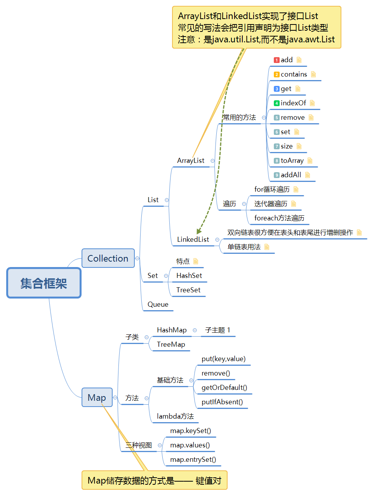

集合框架思维导图

Java集合框架概览

三种基本集合框架：
1、List（有序、可重复）
List里存放的对象是有序的，同时也是可以重复的，List关注的是索引，拥有一系列和索引相关的方法，查询速度快。因为往list集合里插入或删除数据时，会伴随着后面数据的移动，所有插入删除数据速度慢。
2、Set（无序、不能重复）
Set里存放的对象是无序，不能重复的，集合中的对象不按特定的方式排序，只是简单地把对象加入集合中。
3、Map（键值对、键唯一、值不唯一）
Map集合中存储的是键值对，键不能重复，值可以重复。根据键得到值，对map集合遍历时先得到键的set集合，对set集合进行遍历，得到相应的值。
区别：
Vector和ArrayList
1，vector是线程同步的，所以它也是线程安全的，而arraylist是线程异步的，是不安全的。如果不考虑到线程的安全因素，一般用arraylist效率比较高。
2，如果集合中的元素的数目大于目前集合数组的长度时，vector增长率为目前数组长度的100%，而arraylist增长率为目前数组长度的50%。如果在集合中使用数据量比较大的数据，用vector有一定的优势。
3，如果查找一个指定位置的数据，vector和arraylist使用的时间是相同的，如果频繁的访问数据，这个时候使用vector和arraylist都可以。而如果移动一个指定位置会导致后面的元素都发生移动，这个时候就应该考虑到使用linklist,因为它移动一个指定位置的数据时其它元素不移动。
ArrayList 和Vector是采用数组方式存储数据，此数组元素数大于实际存储的数据以便增加和插入元素，都允许直接序号索引元素，但是插入数据要涉及到数组元素移动等内存操作，所以索引数据快，插入数据慢，Vector由于使用了synchronized方法（线程安全）所以性能上比ArrayList要差，LinkedList使用双向链表实现存储，按序号索引数据需要进行向前或向后遍历，但是插入数据时只需要记录本项的前后项即可，所以插入数度较快。
arraylist和linkedlist
1.ArrayList是实现了基于动态数组的数据结构，LinkedList基于链表的数据结构。
2.对于随机访问get和set，ArrayList觉得优于LinkedList，因为LinkedList要移动指针。
3.对于新增和删除操作add和remove，LinedList比较占优势，因为ArrayList要移动数据。 这一点要看实际情况的。若只对单条数据插入或删除，ArrayList的速度反而优于LinkedList。但若是批量随机的插入删除数据，LinkedList的速度大大优于ArrayList. 因为ArrayList每插入一条数据，要移动插入点及之后的所有数据。
HashMap与TreeMap
1、 HashMap通过hashcode对其内容进行快速查找，而TreeMap中所有的元素都保持着某种固定的顺序，如果你需要得到一个有序的结果你就应该使用TreeMap（HashMap中元素的排列顺序是不固定的）。
2、在Map 中插入、删除和定位元素，HashMap是最好的选择。但如果您要按自然顺序或自定义顺序遍历键，那么TreeMap会更好。使用HashMap要求添加的键类明确定义了hashCode()和 equals()的实现。
两个map中的元素一样，但顺序不一样，导致hashCode()不一样。
同样做测试：
在HashMap中，同样的值的map,顺序不同，equals时，false;
而在treeMap中，同样的值的map,顺序不同,equals时，true，说明，treeMap在equals()时是整理了顺序了的。
HashTable与HashMap
1、同步性:Hashtable是线程安全的，也就是说是同步的，而HashMap是线程序不安全的，不是同步的。
2、HashMap允许存在一个为null的key，多个为null的value 。
3、hashtable的key和value都不允许为null。